Ik ben volgens mij niet de handigste reiziger. Met iemand naast me die elke beweging ziet en daar iets bij voelt, is dat een proces van actievere bewustwording. Ik trek aan touwtjes van brandmelders en laat producten vallen in winkels. Normaal gesproken is dat een doodzonde in het beleefde Japan, waar een nies al reden is tot grote schaamte. Maar in Osaka valt een geluid meer of minder niet op.
De arcade- en grijpkastfanaat komt hier volledig aan zijn trekken, net als de pachinkospeler. Pachinko is een hypnotiserend machinespel waarbij je al rokend uren metalen balletjes kunt lanceren om ze meestal te verliezen, en zeldzamer in te wisselen voor prijzen, of voor contant geld verderop in de steeg. Heel mooi vastgelegd in Tokyo-Ga van Wim Wenders.
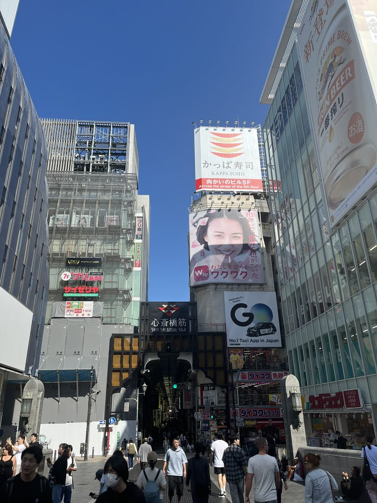
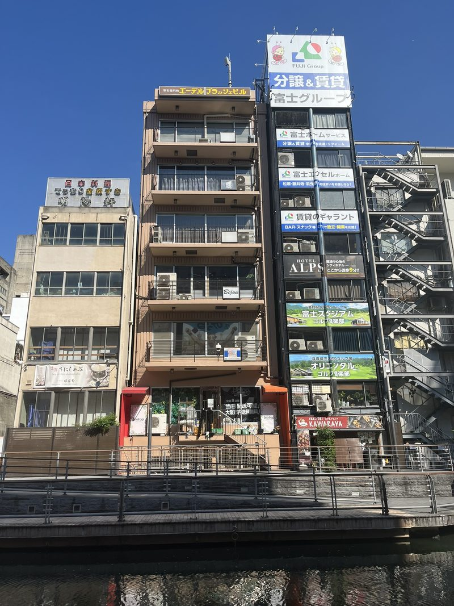
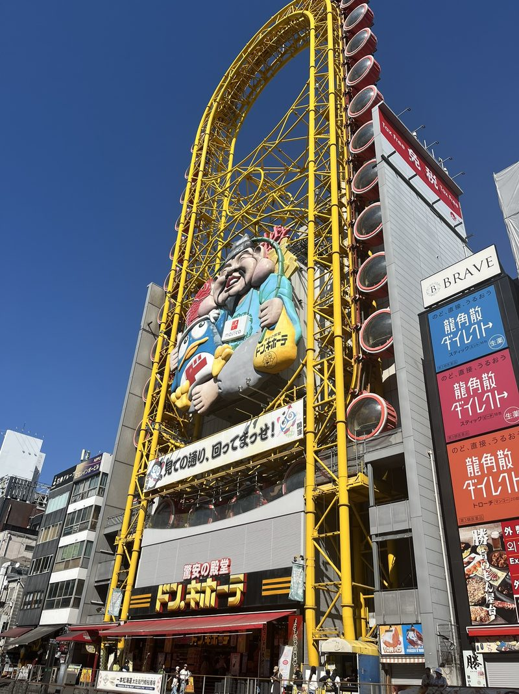
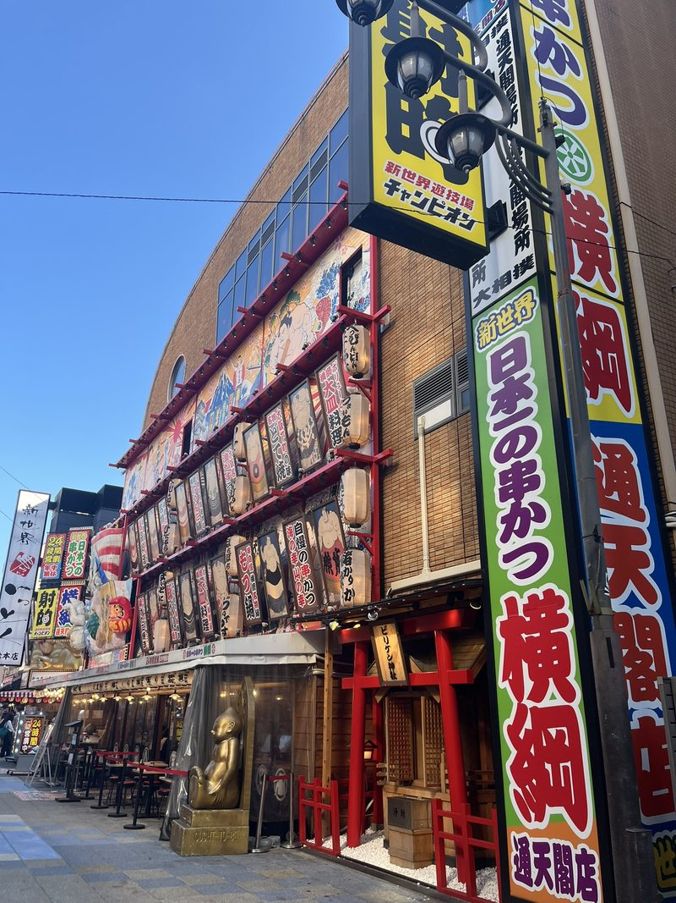
Visueel geweld
De strategie is wederom lopen. Eerst langs de grachten, omringd door grijs en visueel geweld. De enorme billboards van led en 3D-figuren steken af tegen een prachtig leegstaand theater in Italiaanse stijl, dat vreemd naast de lokale manneke pis staat. Al snel zit je in eindeloze markthallen voor de snelle hap en de waren: kimono’s, wellness, aardewerk in stalletjes en nog veel meer. We worden vintagewinkels binnengesmeekt, maar slaan het micropigcafé over, waar biggetjes je helpen je latte te drinken.
Osaka is na Tokyo de grootste stad van Japan, waar nee zeggen onbeleefd is. Dus zeggen ze “een beetje”. Vergeleken met Tokyo ligt er ook een beetje meer afval op straat en zijn ze een beetje directer, wat sneller tot gesprekjes leidt. De geur van tandarts is universeel, merkt E.L.K. op.
Het zijn niet onze energiekste dagen: ondanks de mondkapjesdrift van de locals hebben onaangename deeltjes zich in de holtes van ons gelaat genesteld. Dankzij E.L.K. krijgt ons gestel een boost en eten we dagelijks minstens één keer louter biologisch. En anders is het wel gefermenteerd, van de aardappelsalade tot de kip, van soep en paddenstoelen tot de lotusbloem en de pastinaak.
Ik smikkel ook van de lokale specialiteiten, maar het is niet heel treurig om hier weg te gaan. Op een soort Schiphol van een treinstation pakken we de bus naar de volgende bestemming, waar volgens de reisboekjes de bezoekersaantallen een hoogtepunt bereiken: Kyoto.
Genji
In de voormalige hoofdstad is veel bewaard gebleven, zoals de nationale tuin met een keizerlijk paleis dat eeuwenlang dienstdeed, tot ze er een museum van maakten. De expositie die ons literaire hart sneller laat kloppen gaat over de oudste roman ter wereld: het verhaal van Genji, geschreven door de Japanse hofdame Murasaki Shikibu rond het jaar 1000, over liefdes en politieke intriges. Herschreven edities zijn kunstwerken, met perfect geïnkte dikke tekens op gigantische rollen of vergeelde boekwerken van voor de houtblokdruk. En anders is het verhaal wel nageschilderd op doeken of kamerwanden, soms slim gescheiden door gouden wolkjes, als een volmaakte vorm van een strip avant la lettre.
Inmiddels is er bijna geen bijsmaak meer aan het boeddhistische teken (manji) dat als hakenkruis is geadopteerd, en dat in het boeddhisme staat voor vrede, harmonie, barmhartigheid en geluk. Geluk krijgen de mensen ook van noedels en draken. Een blauwe draak van stof wordt voor heilige bescherming verplaatst door krijgers in een tenue dat uit de middeleeuwen had kunnen komen.
Gelegen in een bergdal is Kyoto een wonderlijke stad. Overal in Japan, maar hier vooral, zie je hoe lukraak er gebouwd wordt, met als grootste blikvanger een futuristisch glazen station. In één straat vind je flats in alle soorten, betonnen prisma’s, vergeelde muren van glas (in lood), rechthoekige schuiframen van rijstpapier, torenkamers, lage tempeldakranden, afbrokkelend hout, Griekse tegeltjes, opgeknipte sluierdoeken voor de deur, paarse golfplaten, bamboeschermen, marmeren pilaren, kunstgras, struiken, mediterraan beige flats en renaissance-operagevels: I kid you not. Een wirwar van elektriciteitsdraden hangt boven elk weggetje, omringd door drukke kruispunten waar je regelmatig minutenlang naar een rood licht kijkt.
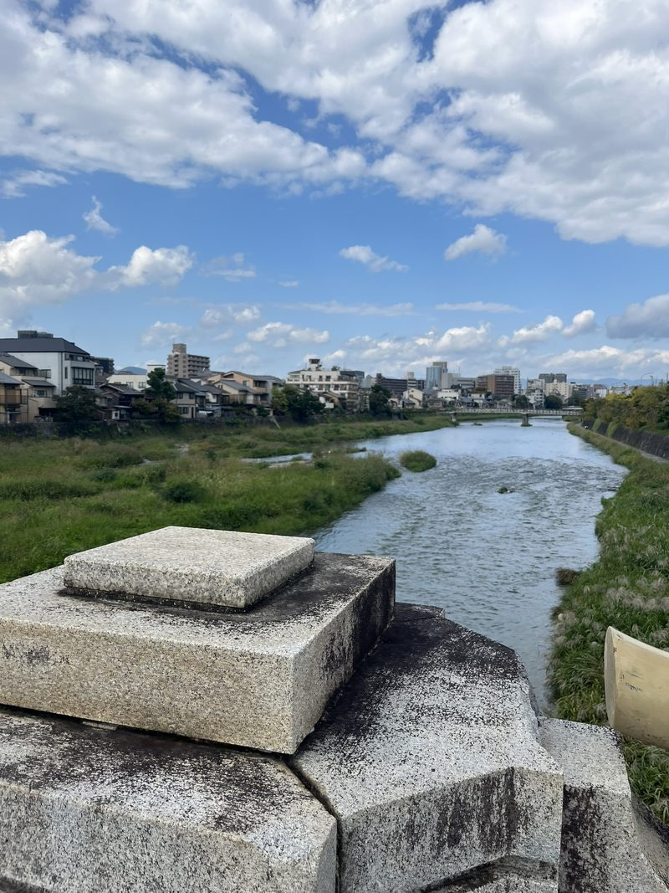
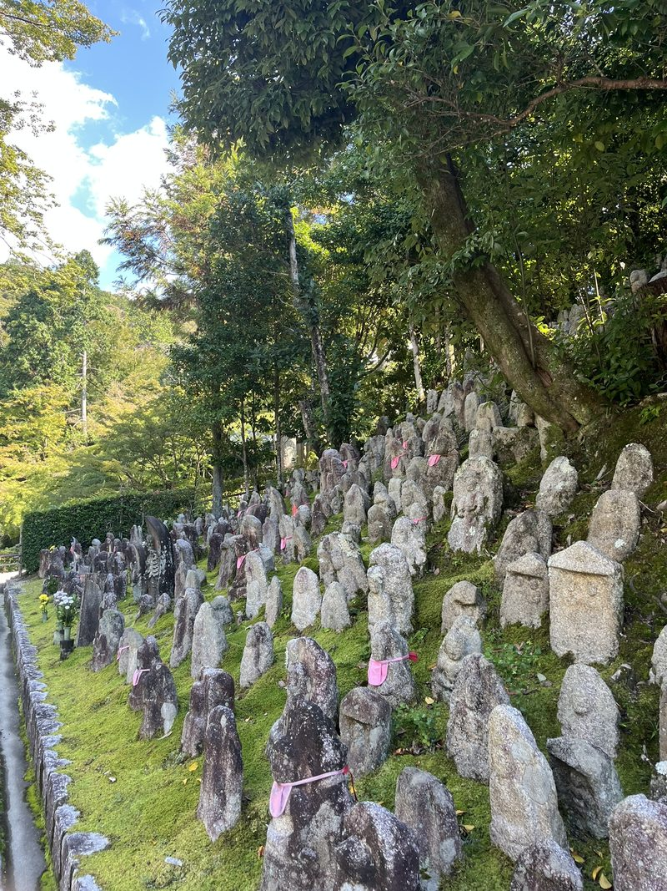
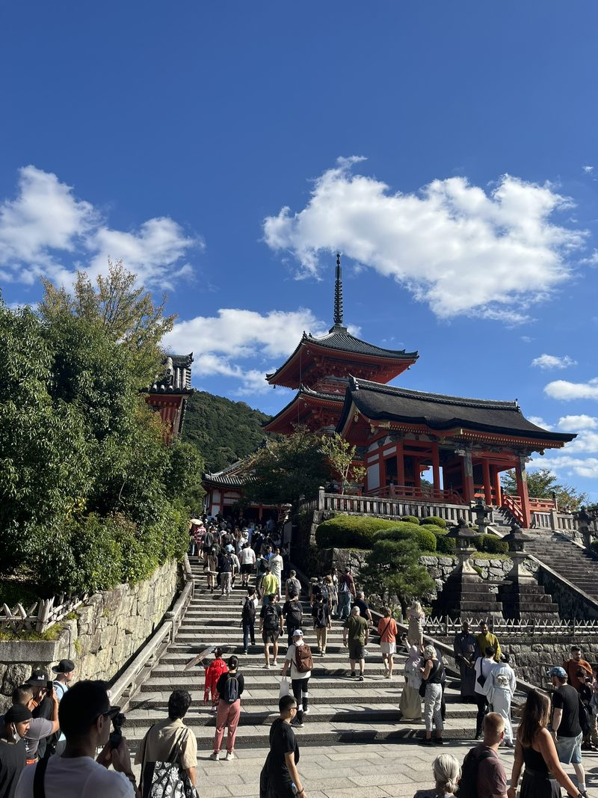
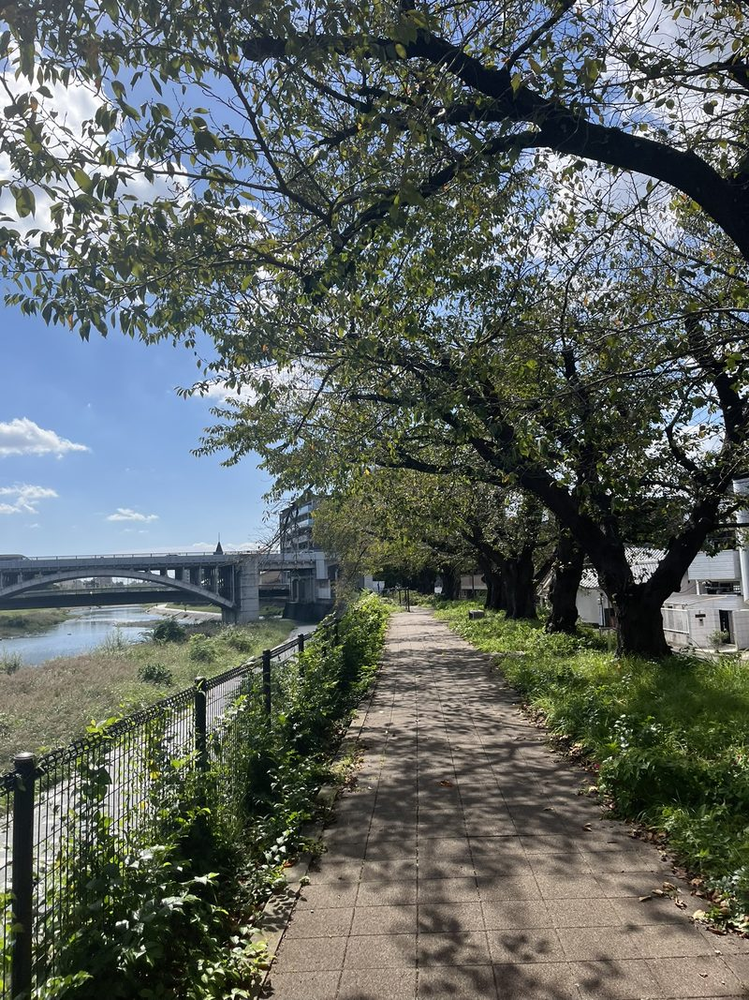
Shaki shaki
Appelgrote limoenen kun je zo plukken. Op de markt eet je creatief in gefrituurde producten, al dan niet op stokjes, van zeldzame kaassticks tot blokken ijs in een heet pankojasje aan toe. Dat krijgt het toverwoord shaki shaki: sappig én knapperig.
Badend in het ledlicht kun je een qr-code scannen om aan de hype mee te doen bij een plekje voor sappige udon. Ik neem natto kamatama udon: naar verrotting geurende gefermenteerde sojaboontjes met rauw ei erbovenop. Het wordt een bevredigend slurpfestijn.
Koffie brouwen ze soms in speciale glazen keteltjes die eruitzien als een alchemistenlab. Van koffie moet je naar het toilet. Terwijl ik het privacyknopje indruk, dat een soort doorspoelgeluid maakt, besef ik dat mensen bij dit geluid uit mijn wc meteen weten wat ik zit te doen, en dat ik het probleem dus alleen verleg.
En voor het eerst (!) eten we sushi. Schoenenvrij op de grond, waar om onduidelijke redenen een scheepscultuur hangt: er wordt op gongen geslagen en het keukenpersoneel zet lange, diepe keelklanken in. Voor een toetje moet je de straat op, naar de rijen voor de stalletjes met onduidelijke deeglapjes met vulling.
Aan de bar
De hoop om een geisha de oversteek te zien maken tussen de klassieke houten huisjes heeft iets mystieks. Maar het oog wordt snel bedrogen: hordes niet-Japanners kleden zich traditioneel aan voor de ultieme foto in de door rode lampionnen verlichte Kyoto-nacht.
Ik zak alleen af naar de bar van gepensioneerd kunstenaar Kai Fusayoshi, die je nooit vindt als je het bestaan niet kent. “Whisky of sake”, gorgelt hij, en ik kies voor het laatste, dat in flessen klaarstaat. Ik krijg een gigantisch glas, tot de rand klotsend vol. Fusayoshi is fotograaf en heeft al zijn werk over de ruimte verspreid, in de vorm van fotoboeken en postkaarten. Hij scharrelt zelf wat achter de toog rond, laat glazen vallen en wauwelt wat met beperkte spraak, maar raakt niet van de kaart. Flessen drank vraagt hij gasten zelf open te maken. Hij is in elk land geweest en raadt me zelfs een goede sakebar in Amsterdam aan. Een vriend van hem komt avondeten brengen (twee onigiri’s), schenkt zijn eigen drank in en biedt me een sigaret aan. Ik koop kaarten. Mensen komen er terug.
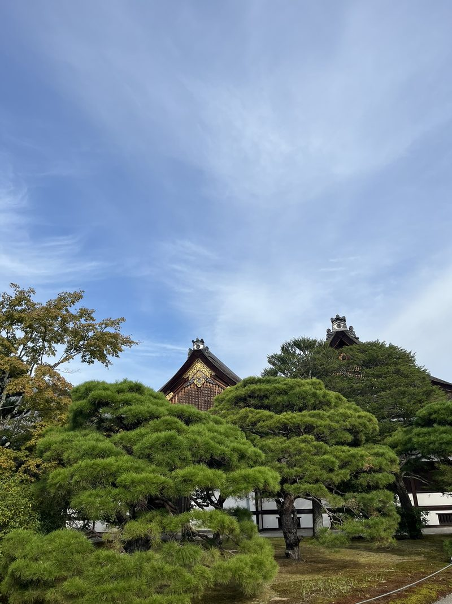
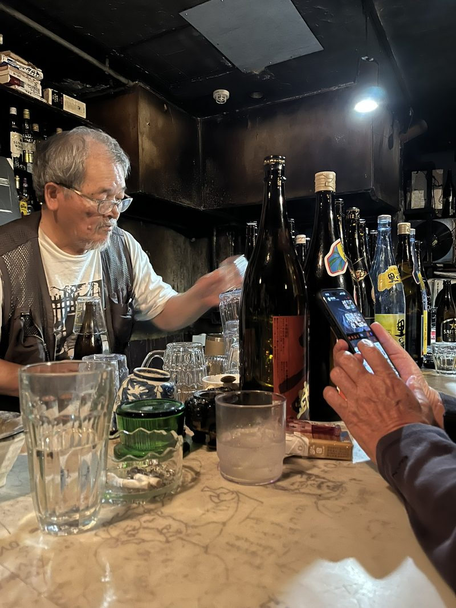
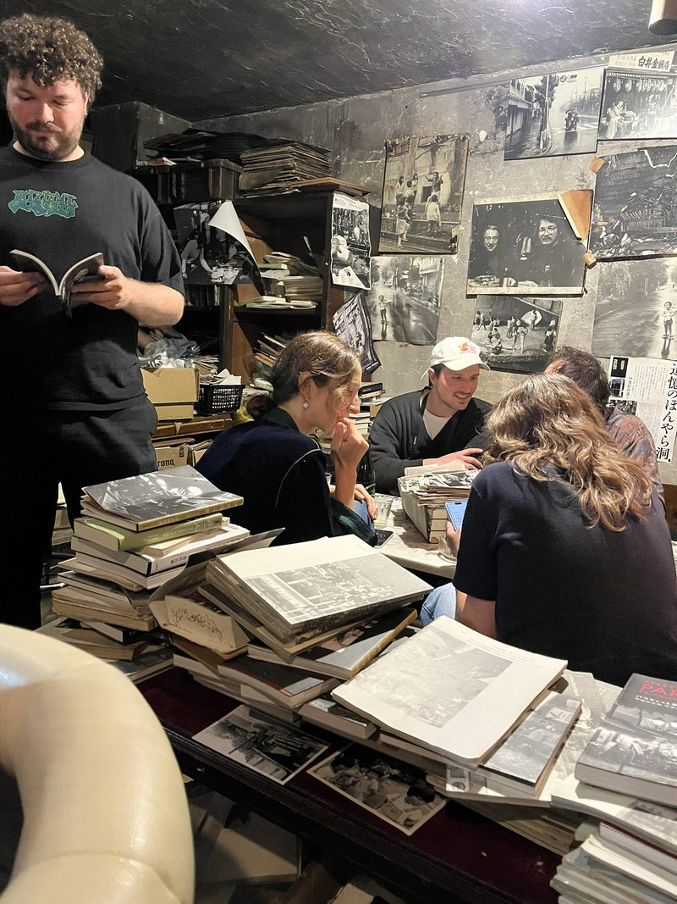
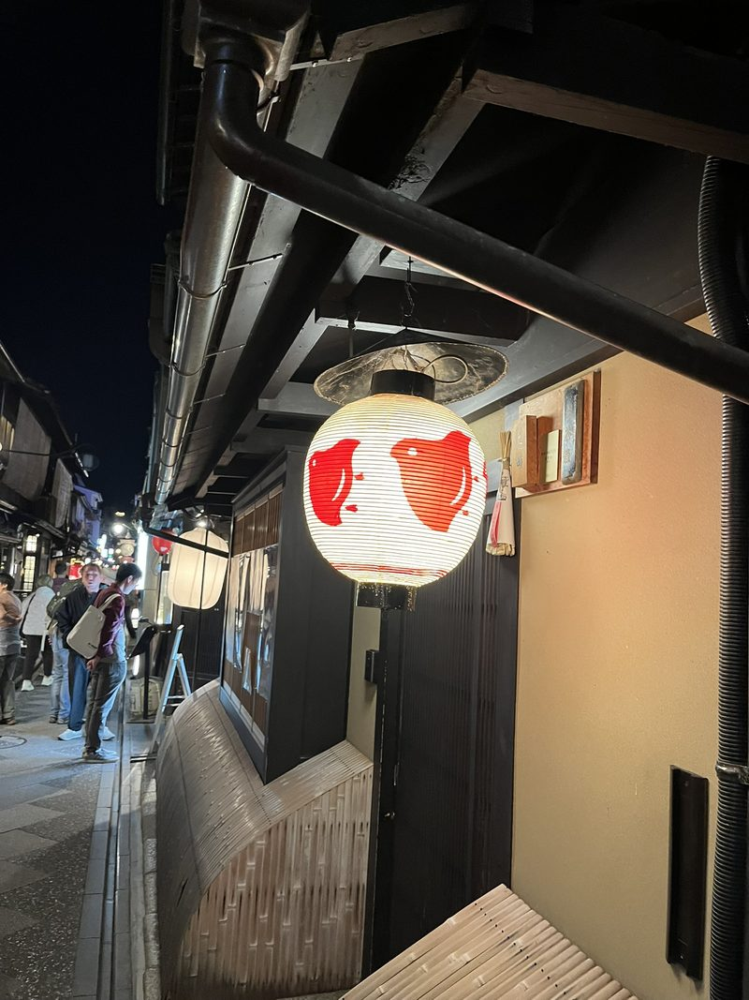
Je vraagt je misschien af wat je nu eigenlijk leest. Ik heb het maar “blog” genoemd, maar het Japanse woord zuihitsu past er eigenlijk beter bij: aantekeningen, observaties, columns, waarvoor je altijd je schrift bij je hebt. Voor mij is het een uitlaatklep en een archief om op terug te vallen. Voor jullie hopelijk geen bak Japan-clichés. Tot de volgende: het kunsteiland.
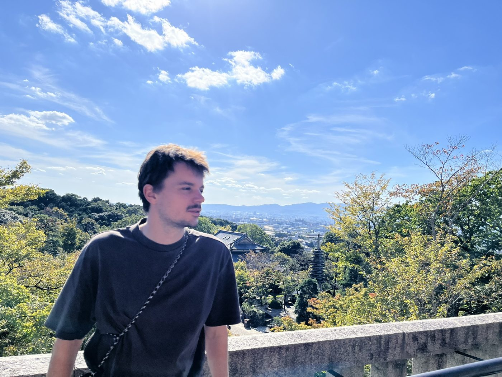